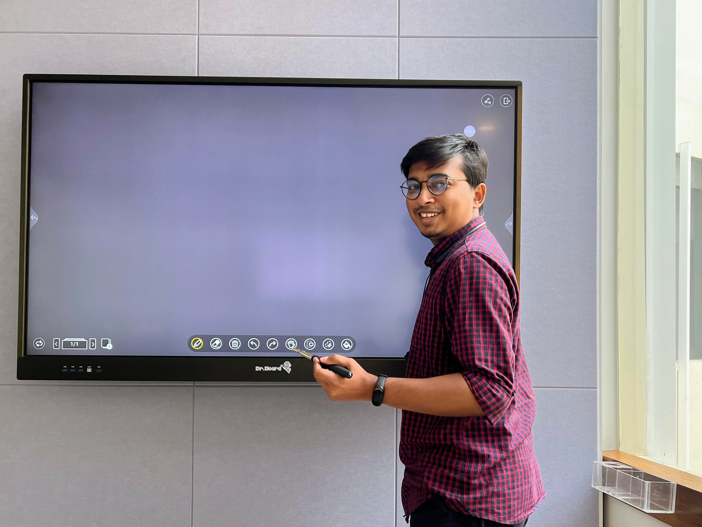

Hasibul Hasan
I am a PhD student in Economics at the University of Colorado Boulder. Previously, I worked as a research consultant with the South Asia Gender Innovation Lab at the World Bank and as a research associate at the BRAC Institute of Governance and Development.
I hold Bachelor's and Master's degrees in Economics from the University of Dhaka, Bangladesh.
During my undergraduate years, I worked as a research assistant and interned at BRAC International and the ICT Division of the Government of Bangladesh. My research interests span development, public, and political economics, especially poverty, agency, bureaucracy, and corruption.
I have presented my work at several conferences, including the 2023 IGC Conference on Resilient and Resurgent Bangladesh. I received the Sen-Haq Award for Best Research Paper at the 2023 South Asian Economics Students Meet, held in Nepal, for my paper on shocks, resilience, and the dynamics of vulnerability in rural Bangladesh.
Email: hasib.hasan@colorado.edu